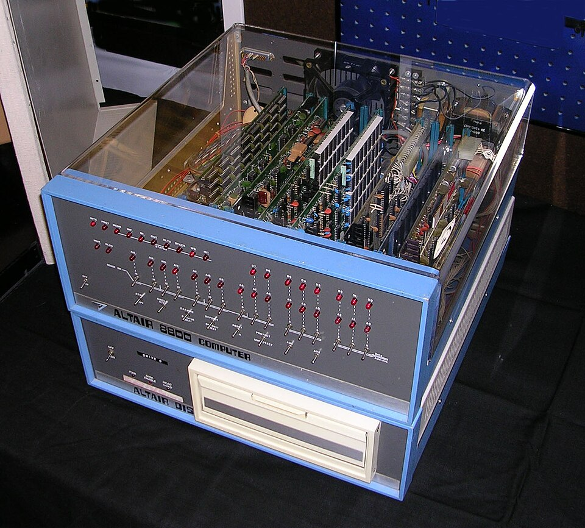

Humans & Applications
The penthouse of the tower, where all six floors below turn into something a person can actually see, touch and use. This floor is about making computers fit humans — and it is where every change in the building eventually shows up on your screen.
👤 What this floor is
Floor 7 is the meeting point between the machine and the person. It covers the interface (how you interact — buttons, taps, voice), application design (making tools clear and pleasant), and accessibility (making sure everyone can use them). Every powerful idea from the lower floors is invisible to most people until it reaches here.
The big ideas
The screens, touchpoints, and responsive layers that connect human intent with silicon.
🖱️ 1. Making computers usable (the interface)
Early computers needed typed commands only experts knew. The **graphical interface** (GUI) changed that by shifting from Recall (memorizing and typing strict text commands) to Recognition (seeing and clicking options).
This was built on the **WIMP** paradigm: Windows, Icons, Menus, and a Pointer. Imagine a **physical desk** with folders, paper documents, and a trash can, but drawn on a screen. Instead of typing codes, you use a mouse or your finger to slide folders around and drop files in the trash. This visual desktop metaphor turned the computer from a rocket-scientist's calculator into an everyday tool.
Dragging a file into a folder feels obvious now, but it was a deliberate design idea: represent invisible data as objects you can see and move. That choice is why your grandparents can use a phone.
Graphical interfaces (Floor 7) represent software data structures (Floor 5) running on operating system screen buffers (Floor 3) driven by physical graphics chip transistors (Floor 2).



Command-line computers were powerful but intimidating — you had to memorise exact typed instructions. Only trained specialists used them.
A graphical interface — windows, icons, a mouse — so a computer could be operated without learning a language, and sold to everyone.
📱 2. The computer in your pocket (the smartphone)
On 29 June 2007, Apple released the iPhoneAnnounced by Steve Jobs in January 2007 and released on 29 June 2007. Its multi-touch screen made the pocket computer mainstream and created the modern app economy.. Its multi-touch screen — pinch, swipe, tap — put a real computer in everyone's pocket and, with the App Store the following year, created an entire economy of applications.
Phones changed software by adding hardware eyes and ears (sensors):
- 📡 GPS: Detects your physical location on Earth, making maps and location-aware apps possible.
- 📐 Accelerometers & Gyroscopes: Detect tilt and rotation, rotating the screen automatically and letting you play games by tilting the device.
- 👆 Capacitive Multi-Touch: Measures changes in electrical charge from your skin, replacing plastic keypads and resistive styluses with natural swipes, pinches, and gestures.

Mobile screens (Floor 7) coordinate with cellular networking chips (Floor 4) running mobile operating system kernels (Floor 3) on custom microprocessors (Floor 2).
Phones could technically reach the internet, but using it was miserable on a numeric keypad and a postage-stamp screen.
A phone that was really a computer you touch — full screen, multitouch, a real browser — and, a year later, the App Store economy.
📐 3. One app, every screen (responsive design)
People now use phones, tablets, laptops and TVs interchangeably, so a well-built app must reshape itself to fit any screen.
Think of **responsive design** like a **liquid** that takes the shape of whatever container you pour it into. In CSS, we do this using **Media Queries**:
@media (max-width: 768px) {
.grid-layout {
display: flex;
flex-direction: column; /* Stack vertically on small screens */
}
}
The browser checks the viewport width and automatically switches layouts, adapting the same code fluidly.
The same site showing a single column of posts on your phone but a wide grid on a laptop isn't two different apps — it is one app reshaping itself to the space available.
Responsive web pages (Floor 7) are served from cloud databases (Floor 4) as code (Floor 5) that parses in the browser runtime (Floor 3).
Let's trace what happens when you ask Siri or Google: **"What is the weather?"** Watch the request travel down and back up all 7 floors:
- 🎤 Floor 7 (Apps): You speak. The microphone records your voice.
- 🌐 Floor 4 (Networking): Your voice is chopped into small packets and mailed over the internet to a server.
- 🗄️ Floor 5 (Software & Databases): The server queries a weather database to find local temperatures.
- 🧠 Floor 6 (AI): An AI assistant reads the weather numbers and writes a nice reply sentence in natural language.
- ⚙️ Floor 3 (Architecture & OS): The operating system kernel manages the server software running the AI logic.
- 💻 Floor 2 (Hardware): The GPU chips process the mathematical instructions.
- 🔢 Floor 1 (Theory): The bedrock does the matrix multiplications (linear algebra) that power the AI.
Every single second, your phone runs a cascade through all 7 floors of the tower!
💬 4. AI-Native & Agentic Interfaces
We are in the middle of the next major interface evolution: the shift to AI-Native Interfaces and Agentic UI.
Instead of learning how to click through complex tabs, forms, and filters to book a flight or write a report, you simply tell the computer what you want in plain English (or voice).
The interface behaves like a conversational partner. Behind the scenes, the system acts as an **autonomous agent**—determining the necessary steps, running searches, querying APIs, and dynamically generating custom cards, sliders, or graphs on-the-fly to show you the result. The software interface compiles itself dynamically based on your intent.
Chatting with a coding assistant that writes, runs, and debugs code inside a preview window is a preview of Agentic UI: the screen adapts to what the AI is doing, rather than showing static buttons.
Agentic interfaces (Floor 7) rely on large language models (Floor 6) running parallel matrix calculations (Floor 1) on GPU supercomputers (Floor 2) connected across high-speed cloud networks (Floor 4).
How this floor evolved
From punch cards and command lines to multi-touch and natural speech.
Typed commands
To do anything you typed exact instructions onto a text-only screen — powerful, but only for the trained few.
Touch, voice, everywhere
Screens in every pocket; you swipe, talk to assistants, and expect apps to work seamlessly across all your devices.
You just describe what you want
AI interfaces let you ask in plain language and have the software figure out the steps — the interface itself becoming a conversation.
Douglas Engelbart demonstrates the computer mouse, windows, hypertext, and video conferencing in one single presentation, defining the future of computing interfaces.
Xerox Palo Alto Research Center (PARC) builds the Alto, introducing the desktop metaphor, mouse-driven GUI, and WYSIWYG word processing.
Apple brings the graphical interface — windows, icons, a mouse — to the mainstream, making computers usable by ordinary people.
Released 29 June 2007, its multi-touch screen puts a real computer in everyone's pocket and launches the app economy.
Chat assistants, AI writing and coding tools, image generators — applications built around conversational models that did not exist before 2017.
⚡ This floor's role in the 2017 cascade
Floor 7 is where the cascade becomes something you can feel. Search that answers in full sentences, apps that write and draw for you, assistants you simply talk to — the everyday experience of computing is being rebuilt around the AI floor below. A change that began as mathematics in 2017 finishes its journey up the tower right here, on your screen, in your hand.